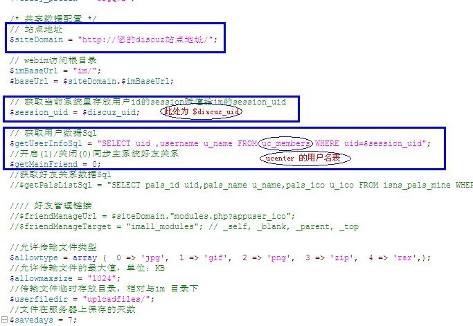

说明：本文档是在原版 Discuz! 7.x 上的安装文档。
1. 确定您已安装好Discuz! 7.x。
2. 下载iWebIM安装包。 您可以从http://tech.jooyea.net/download.php获取到安装包。
3. 由于discuz的用户中心是基于Ucenter的，所以我们建议将数据表建立在ucenter的数据库中，这样可以实现使在基于ucenter下的各个系统中的IM互通信息。
打开sql文件 im/install.sql 在ucenter数据库里创建数据表。
4. 在您的discuz安装目录下创建新目录 im/
5. 解压iWebIM安装包下的所有文件到im/目录
6. 打开文件 im/iweb_mini_lib/conf/dbconf.php
配置文件里头的数据库设置与您的当前iweb sns里的数据库设置一致，修改下图蓝框内的配置信息：
7. 打开文件 im/configuration.php
修改下图蓝框内的配置信息

8. 打开文件 im/plugins/plugin_for_discuz.php 修改cookie前缀，确保和您discuz站点的cookie前缀保持一致。
9. 打开discuz目录 index.php 文件，在文件最后一行加入代码：
10. 操作完成进进入系统查看！
注：
这里的目录都基于discuz安装目录。
如果服务器操作系统是Linux系统，注意将IM配置文件中指定的文件上传目录（“uploadfiles”）及子目录改为“777”